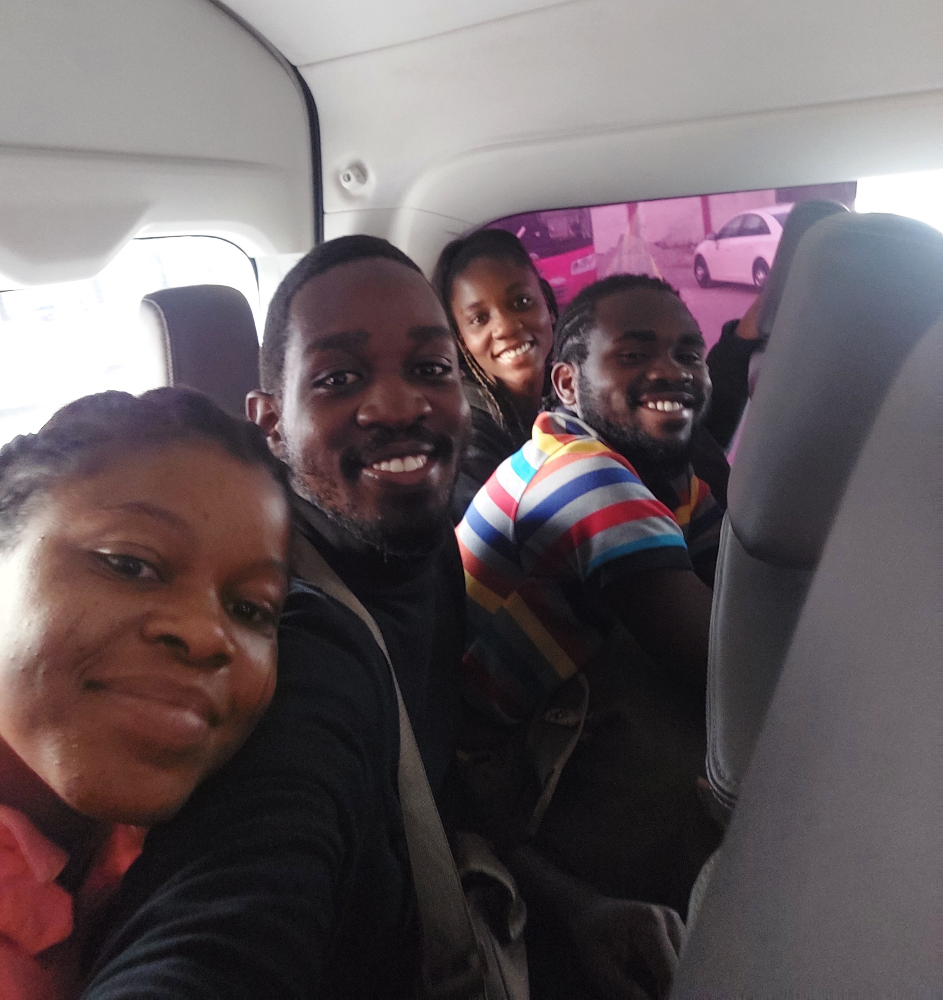
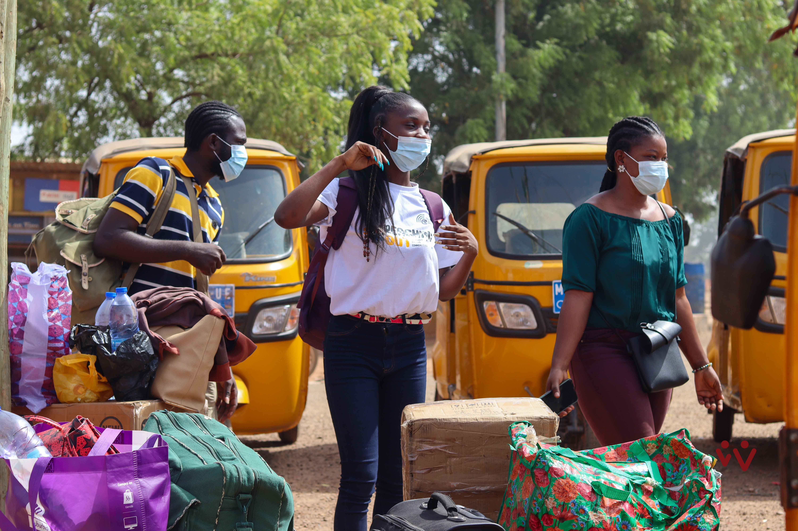
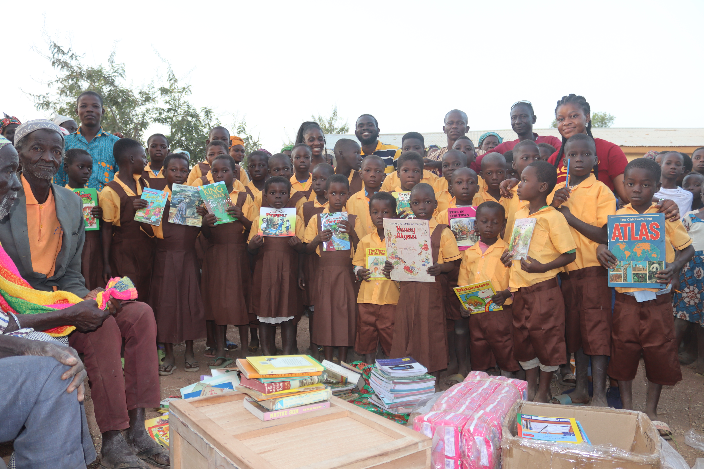

Who would have thought that this journey was going to take forever? It all started on a sunny Friday at the O.A. station in Circle when a team of volunteers from the Wintima Foundation decided to visit the town that is said to have Ghana's poorest man. The reason for taking this long trip was to execute our Box Library Project, which aimed to provide Yizidug Basic School in the Garu District of the Upper East Region with stationery as part of the foundation's annual reach-outs and donations. For three of us whose first time it was visiting the North, this journey promised to be a unique experience.
The bus we booked was expected to take off at precisely 4:00 pm, but our trip was delayed, and the journey began at about 4:30 pm that day. After driving for about three and a half hours, we left the modern cities of the Greater Accra region. We were greeted by the green forests of the Eastern Region, where we were expected to make our first of four rest stops. At around 8:00 pm, we made our stop at Linda Dor in the Eastern Region, where we got some food and other necessities and relaxed for about 15 minutes, knowing that we had a long bumpy drive ahead. The team decided to seize the opportunity to know each other better on the bus. We discussed a lot about ourselves as that was the first time we met each other. We spoke and laughed, slept, and took many amazing pictures and videos throughout the journey.
Soon, we entered the Ashanti Region's capital Kumasi. Journeying through Kumasi was fun. Aside from enjoying the beautiful scenery of the capital, we were welcomed by several hilarious signage and posters, like one food joint whose sign read "Linda Door-Kumasi special." We made our second rest stop at the Kumasi O.A. bus terminal. When we stopped at Kumasi, we had only covered one-third of the time we would spend on the journey. We had about 12 hours more traveling to do.

After Kumasi was a long rough ride straight to Tamale. The journey afterward was just sightseeing. It was refreshing seeing the evergreen vegetation in the Bono and Ahafo regions and then entering the dry savannah lands of the Northern region. The difference in the building structures was also quite astonishing. The ride throughout the night landed us at the O.A. bus terminal in the region's capital, Tamale, where we would make our third stop at about 6:45 am the next day. Finally, we were close to our destination, we thought. Apparently, there was more to come.
The next stop was in Bolgatanga. There, we met busy streets, women and men alike, riding on their motorbikes and the sight of turkey meat displayed for sale. We traveled for two and a half hours from Tamale to Bolgatanga and finally got off the O.A. bus.
After what became a bit of a struggle, we finally chartered two tricycles — what we know as "Pragya." They took us to the Garu township. We were greeted by unpaved roads, dusty villages, sparse trees, and savanna on our way. After about 45 minutes, we were finally here, at the home that received us. Waiting to welcome us was the household head and headmaster of Yizidug Basic School.

After getting about an hour of relaxation and refreshment and getting to know our host family, we set off to finish up the task for which we came. We traveled some miles more to get to the basic school. We were met by a group of happy children who suddenly broke into excited chanting, inviting other children who emerged from their huts immediately they saw us coming. They were followed by their mothers. Soon we had over a hundred people from the community gathered at the front of the primary school. The chief and his elders honored us with their presence as well.
Soon, the event commenced. As the tradition demands, they asked about our mission. We introduced ourselves and the foundation and our purpose to them. The headmaster did us excellent service by also acting as our interpreter. They responded with gratitude and then expressed their needs as a school and a community. Some issues they mentioned were the lack of classroom furniture and clean, healthy water for domestic use. Sadly, the pupils sat on the classroom floors to study. The community well was so unhealthy that it was slowly causing blindness to the community people who could only rely on that one source of water.

At around 1 pm, we were ready to present our donations to them. To the pupils, we donated 250 exercise books, 50 pens, 75 sharpeners, and 144 pencils, along with 121 storybooks, 24 textbooks, 30 uniforms, and 120 sanitary towels for the mothers. The smiles on the faces of the pupils, the celebratory dance their mothers did, the loud claps and chanting after they received these gifts — it was heartwarming.
After the donations, we definitely had to see what was wrong with the community well. We visited the well and observed that it was not safe for drinking. We took a sample for testing in Accra. And that would inform our next project.
The trip was long. It took almost 18 hours to get to our final destination, but it was worth it. It taught and showed us so much. We visited several regions and towns in just one journey. And above all, we were able to lend a helping hand to those that needed it and put smiles on their faces. It was a true honor.